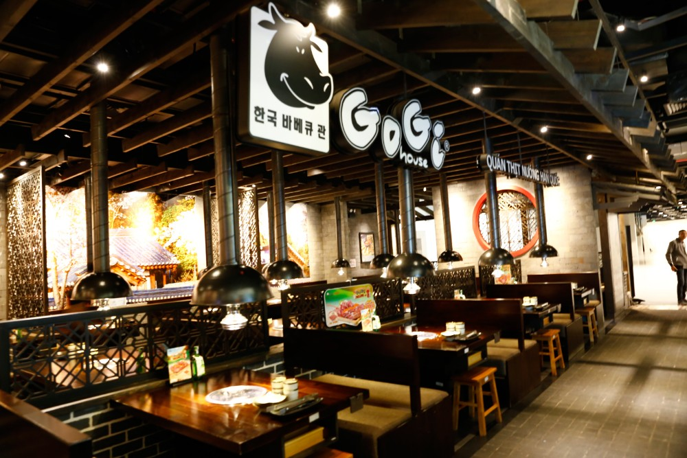
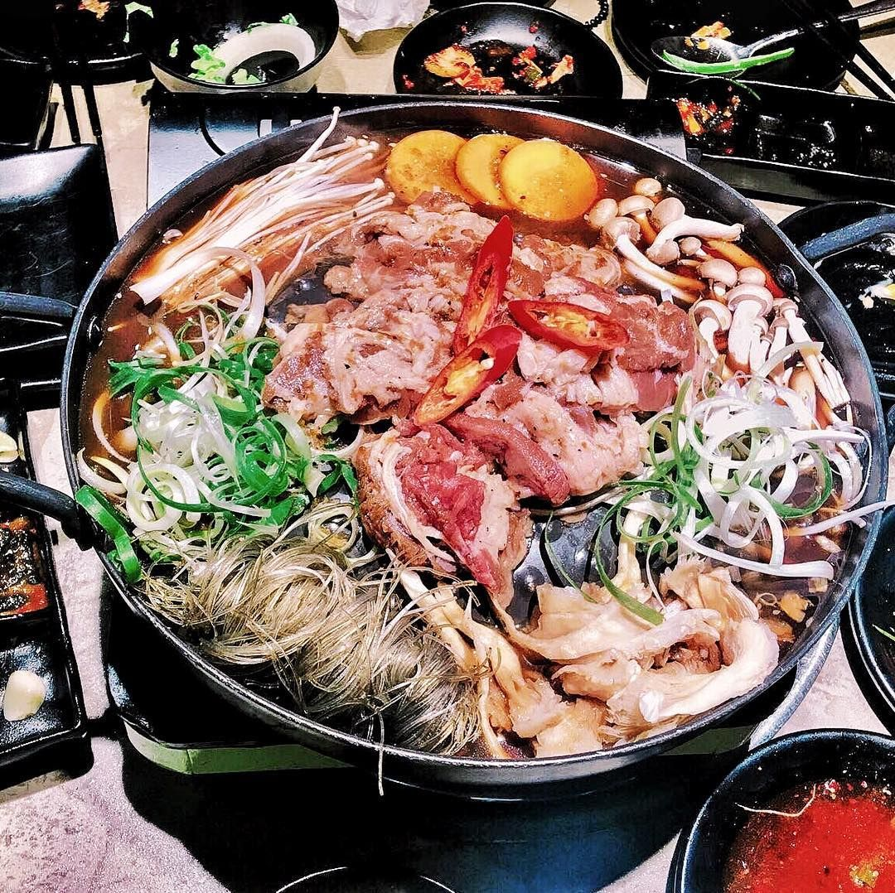
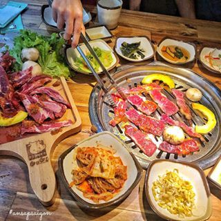
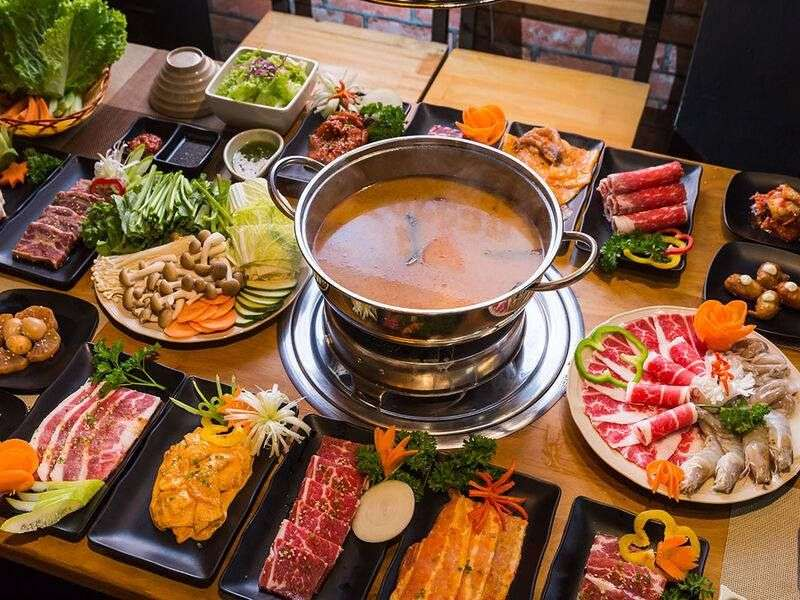
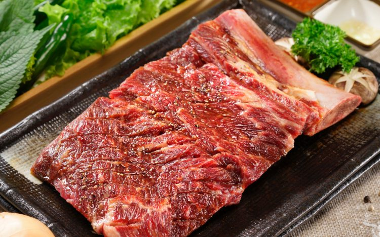
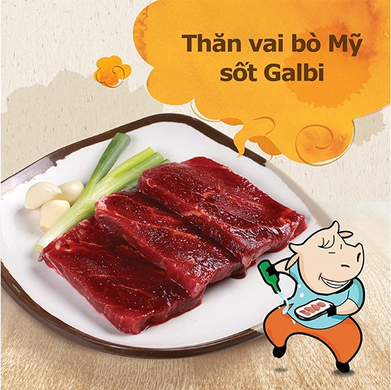
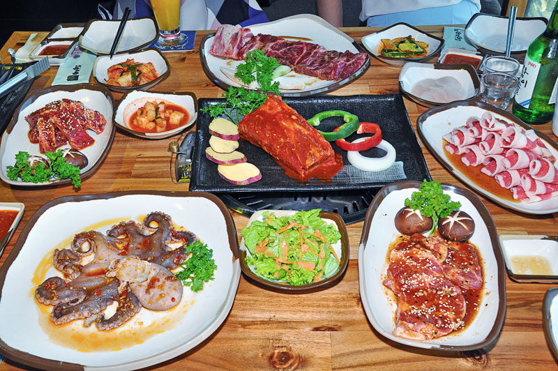
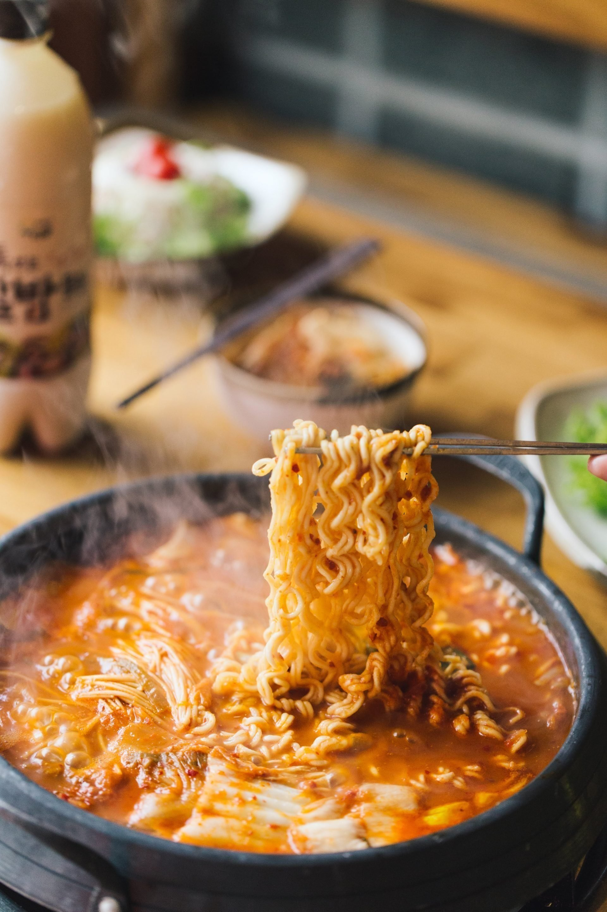

Gogi House sẽ đưa bạn đến Seoul, những con phố bình dị, những quán thịt nướng tấp nập người ra kẻ vào, những chai rượu sochu mang văn hóa Hàn Quốc. Nếu đã từng thưởng thức một lần thịt nướng tại Gogi House, chắc chắn bạn sẽ không thể quên được hương vị ngây ngất của món sườn non bò Mỹ, nạc vai bò Mỹ, dẻ sườn tươi… khi hòa quyện với các gia vị đặc trưng, các món ăn kèm như rau xà lách, kimchi. Không những thế, bạn còn được đắm mình trong vô vàn những món ăn của xứ sở Kim Chi như cơm trộn, mỳ lạnh, canh Kimchi, các loại lẩu,… đậm chất Hàn.
Hân hạnh quý khách ghé thăm GOGI HOUSE
Giới thiệu chung
- Golden Gate Group (công ty CPTMDV Cổng Vàng) là cái tên không ai không nghe tới trong làng F&B. Đây là chủ sở hữu của trên 20 nhãn hàng F&B nổi t iếng tại Việt Nam như Kichi Kichi, SumoBBQ, Vuvuzela, Hutong, GoGi House. Với hơn 200 nhà hàng trên khắp cả nước, Golden Gate Group hiện đang là người dẫn đầu trong thị trường F&B đầy cạnh tranh này với mô hình chuỗi nhà hàng.
- Là một công ty kinh doanh trong nganh dịch vụ nhà hàng khách sạn có vốn đầu từ nước ngoài, Công ty sở hữu chuỗi nhà hàng đang phát triển nhanh trên toàn quốc: lẩu nấm Ashima, lẩu bằng chuyền Kichi Kichi, Sumo BBQ,… Công ty sở hữu những nhà hàng có mô hình kinh doanh mới lạ, độc đáo và đang ngày càng phát triển hoàn thiện.
- GoGi House là một trong những thương hiệu con của Golden Gate Group, chuyên cung cấp các món ăn thịt nướng theo phong cách Hàn Quốc dưới nhiều dạng thức như món lẻ, combo, buffet. Một trong con phố nổi tiếng tại xứ sở Kim Chi. Những quán thịt thường bình dị làm nên nét đẹp quen thuộc của một nền ẩm thực Hàn Quốc. Với hơn 60 nhà hàng trên khắp Việt Nam, GoGi House hiện đang là một trong những “máy in tiền” của GoGi trong thị trường F&B, mảng đồ nướng, chiếm đến 60% doanh thu của toàn hệ thống Golden Gate Group.
- Tọa lạc tại những vị trí trung tâm như trung tâm thương mại Big C, Royal City, các trục đường trung tâm thành phố,… GoGi House(quán thịt nướng Hàn Quốc) đưa các thực khách đến Seoul với những quán ăn dân đã gắn bó quen thuộc với người dân xứ Hàn.
- Nếu bạn đặt chân đến Hàn Quốc thì nhớ thưởng thức thịt nướng tại Gogi House bạn sẽ không thể quên được hương vị của những món thịt nướng tại đây được hòa quyện hương vị đặc trưng của xứ sở Kim Chi trở nên cuốn hút. Bên cạnh đó, bạn nên sử dụng kèm một số món ăn như cơm trắng, mỳ lạnh, canh kim chi,… để tạo thêm những cách thưởng thức mới lạ.
Không gian quán
Nhà hàng chuẩn Hàn Gogi House có phong cách thiết kế tuy đơn giản nhưng vẫn nổi bật lên không gian sang trọng, hiện đại. Những chiếc bàn gỗ được bố trí gọn gàng, tươm tất kết hợp với họa tiết tường gạch bình dị, khiến nơi đây trở nên dân dã, mộc mạc, đúng với phong cách của các quán nướng Hàn Quốc nguyên bản. Ở mỗi bàn ăn đều được thiết kế một hệ thống hút khói, giúp bạn thoải mái tận hưởng những món nướng lẩu ngon tinh tế mà không lo mùi khói khó chịu ám vào người.

Quý khách sẽ được thưởng thức hương vị Hàn


Mặc dù đây là chi nhánh mới nhưng hương vị và chất lượng vệ sinh được tiến hành không thể bỏ qua. Ngoài BBQ Hàn Quốc xa hoa, có rất nhiều lựa chọn khác ngoài thực đơn. Chúng tôi khuyên bạn nên thử Gejang (Cua sống ướp nước tương) và Saeujang (Tôm sống ướp nước tương). Trong khi thưởng thức món salad nướng, bạn cũng có thể thưởng thức phần thịt cua đầy hương vị ra khỏi vỏ. Đừng quên một cốc soju gần tay bạn. Thực đơn của GoGi House đa dạng những loại thịt nướng chất lượng được nhập khẩu từ Mỹ, Australia như Ba chỉ bò Mỹ, dẻ sườn Bò Mỹ, nạc vai bò Mỹ, thăn bò Australia…

Thịt được mang lên bàn với những bát lớn với pa muchim tươi sáng lấp lánh , một món salad đơn giản gồm rau xanh và hành lá thái nhỏ, một trong những miếng giấy bạc chống lại những con vật thừa thãi. Ngoài ra còn có những giỏ rau diếp đơn giản và lá tía tô, và nhiều loại trang trí khác nhau: món ít dầu mè muối, những lát tỏi sống và ớt jalapeños, và schmears ssamjang , hỗn hợp ớt đỏ và đậu để tăng thêm sự thú vị cần thiết đến những gói thịt nướng bọc rau diếp mà bạn tự tay chế tạo và đưa đến mõm.Thực khách có thể thưởng thức nhiều món ăn khác như: cơm trộn, mì Jajang, canh Kimchi cùng các loại lẩu đặc sắc…

Ấn tượng đầu tiên khi chúng tôi gọi combo thịt hot nhất tại đây, sườn non và sườn hoàng đế bỏ xương đầy sự ngờ vực. Khay thịt bé xinh nhỏ gọn như thế này sao khỏa lấp được hai cái bụng luôn hau háu chờ chực từng tảng thịt rớt xuống. Thậm chí tôi còn bộp chộp gọi thêm cả một combo thăn nội với sườn hoàng đế bỏ xương nữa cho bõ cái công đi ăn. Thế mà bé cái nhầm! Sau bữa ăn hôm đó, tôi đã phải thảng thốt lên rằng hãy đổi tên combo sườn hoàng đế không xương luôn và ngay đi!!! Đích thị đây là combo sườn hoàng đế ăn mãi không hết! Sườn hoàng đế Thạch Sanh!!!

Trong vòng 2-3 năm gần đây, nhu cầu nâng tầm ăn uống của một bộ phận lớn thực khách khó tính, buộc thị trường tiếp tục có những bước chuyển mình. Các phần thịt cao cấp, nguồn thịt thượng hạng từ Mỹ, Nhật đã giúp cho cuộc chiến thịt nướng trở nên đỏ lửa. Giữa muôn vàn lựa chọn như vậy, có đôi khi tôi cảm giác khoảng cách giữa tôi với GoGi House nó đang dần xa cách chút chút. Chỉ đến khi lên được cái hẹn và một lần nữa thỏa sức "tiêm thịt" tại chuỗi nhà hàng này tôi mới vỡ lẽ, "nhà hàng quốc dân" đáng mến đã "bắt trend" nhanh thật nhanh.

Mặc dù đây là chi nhánh mới nhưng hương vị và chất lượng vệ sinh được tiến hành không thể bỏ qua. Ngoài BBQ Hàn Quốc xa hoa, có rất nhiều lựa chọn khác ngoài thực đơn. Chúng tôi khuyên bạn nên thử Gejang (Cua sống ướp nước tương) và Saeujang (Tôm sống ướp nước tương). Trong khi thưởng thức món salad nướng, bạn cũng có thể thưởng thức phần thịt cua đầy hương vị ra khỏi vỏ. Đừng quên một cốc soju gần tay bạn. Vì vậy, hãy mong đợi tìm thấy nhiều đồ uống của Hàn Quốc và địa phương cùng các hương vị khác nhau của rượu soju.

Ấn tượng đầu tiên khi chúng tôi gọi combo thịt hot nhất tại đây, sườn non và sườn hoàng đế bỏ xương đầy sự ngờ vực. Khay thịt bé xinh nhỏ gọn như thế này sao khỏa lấp được hai cái bụng luôn hau háu chờ chực từng tảng thịt rớt xuống. Thậm chí tôi còn bộp chộp gọi thêm cả một combo thăn nội với sườn hoàng đế bỏ xương nữa cho bõ cái công đi ăn. Thế mà bé cái nhầm! Sau bữa ăn hôm đó, tôi đã phải thảng thốt lên rằng hãy đổi tên combo sườn hoàng đế không xương luôn và ngay đi! Đích thị đây là combo sườn hoàng đế ăn mãi không hết!